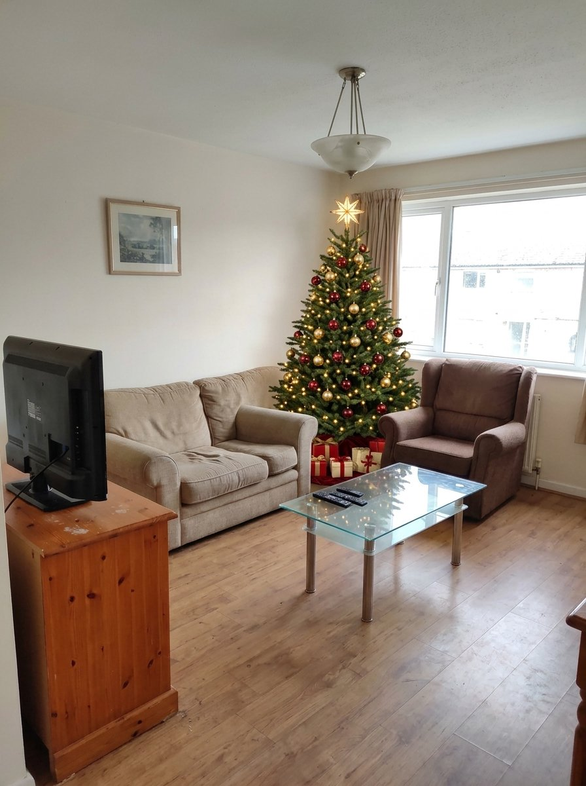
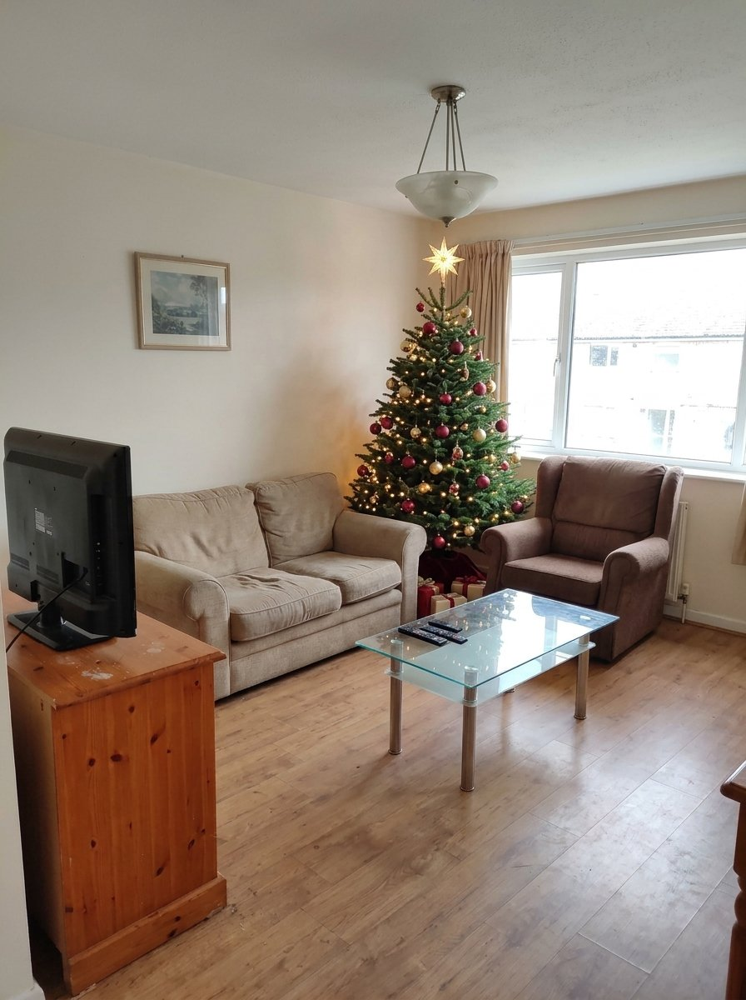
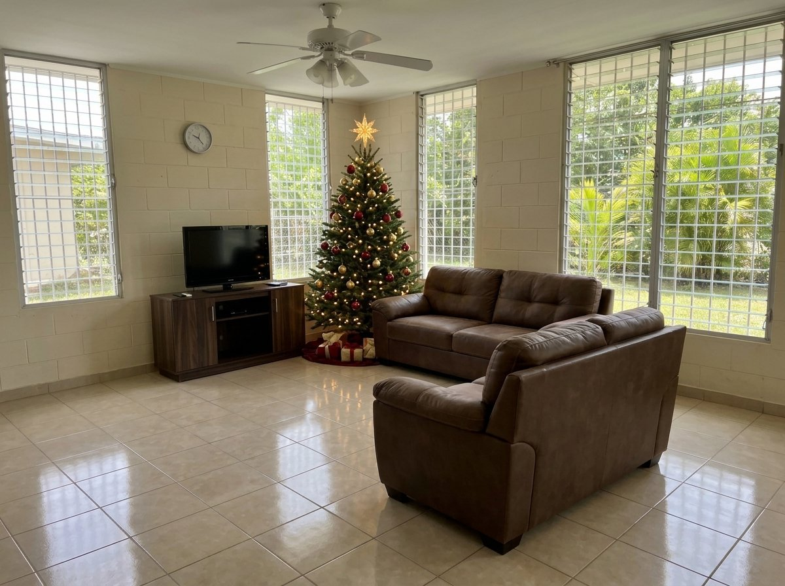
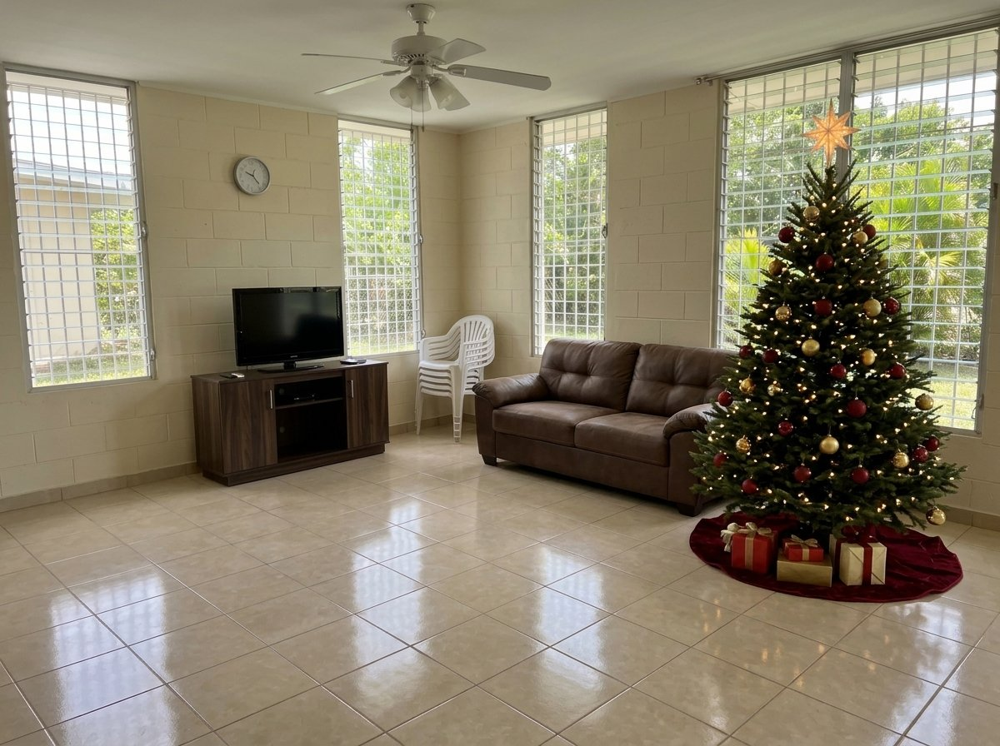
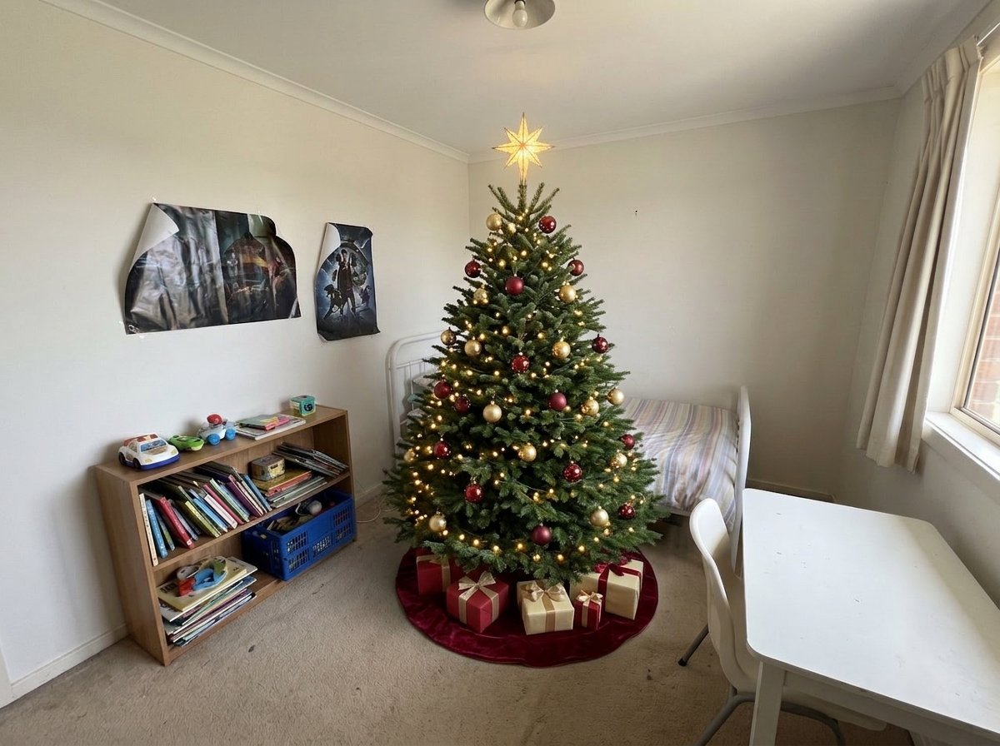
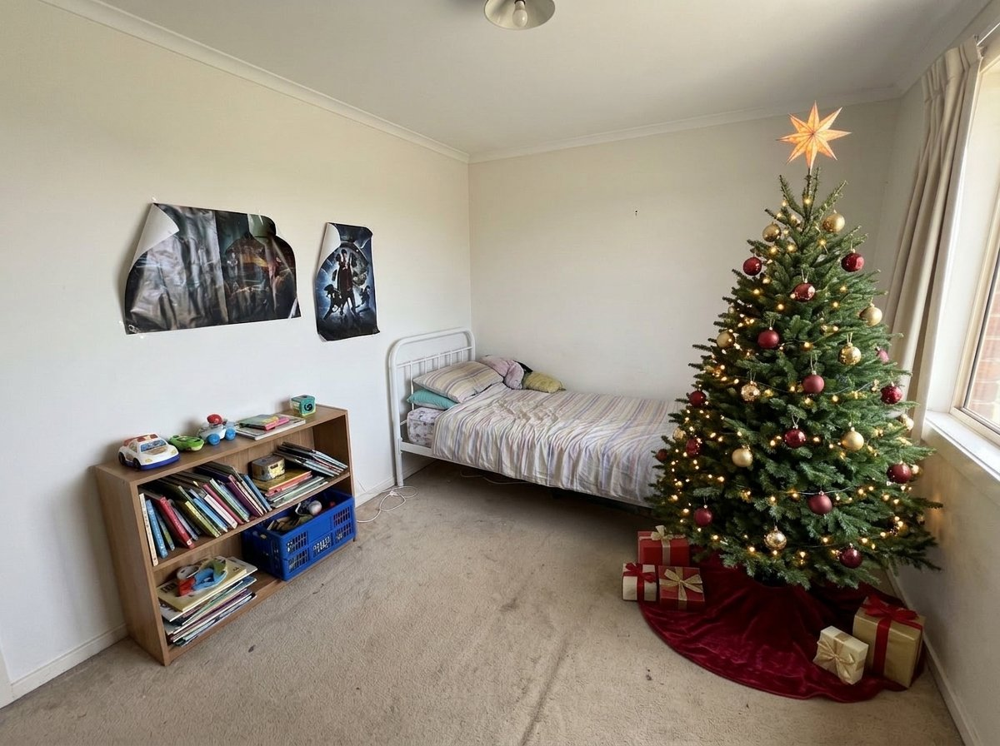

Judge A (anything else changed?): No | Judge B: no
Tip: The current spot for the Christmas tree blocks the curtains and window light. Moving the brown armchair to the left could create a more open, balanced space for the tree.


Judge A (anything else changed?): no | Judge B: No
Tip: The current spot for the Christmas tree works well in the corner. However, moving the TV stand and TV slightly to the right would allow the tree to be centered between the two windows, giving it a much better focal point.



Judge A (anything else changed?): Yes | Judge B: No.
Tip: The current spot is quite cramped since the tree blocks the bed. Moving the desk or swapping the bed's position would allow the tree to stand freely without crowding the sleeping area.


